打印机外壳安装
需要的部件
- 亚克力机框面板一套6件（前面板，后面板，左面板，右面板，上面板，下面板）。
- 608滚动轴承（8个）。
- M3*15螺栓（8个），M3螺母(8个) ，M3垫片（8个）。
认识外壳部件
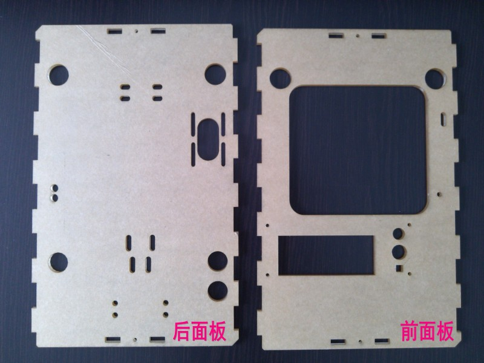
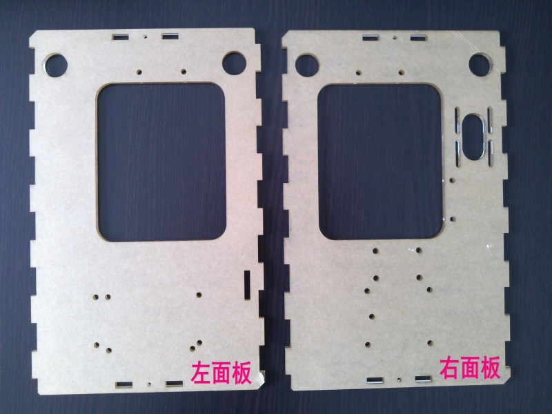
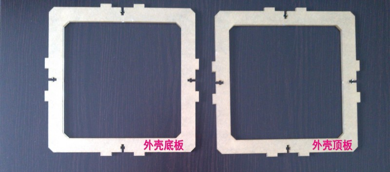
压入滚动轴承
拿出“前面板”，由反面（朝内的一面）压入两个滚动轴承，压入过程中要保持轴承水平，可以把z平台亚克力板垫在上面保持水平压入。
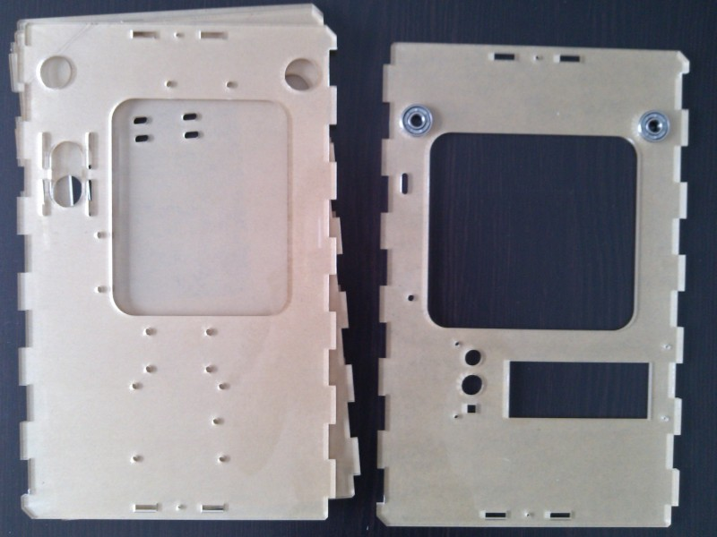
压入后检查一下面板正面，注意面板正面的平整，接下来用相同的方法处理“右面板”
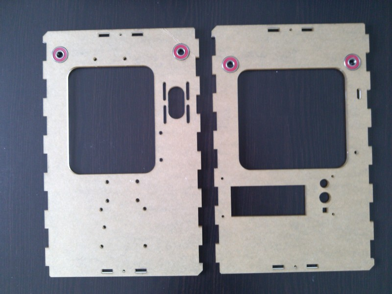
在z平台亚克力板帮助下压入“后面板”轴承
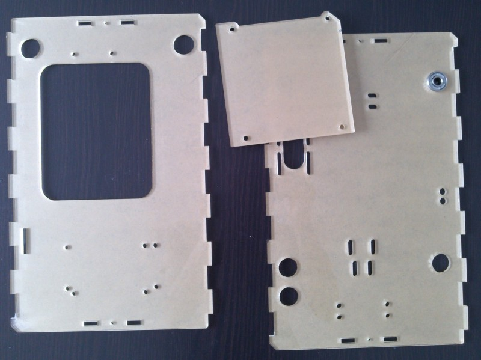
安装后反过来看看平整度如何。
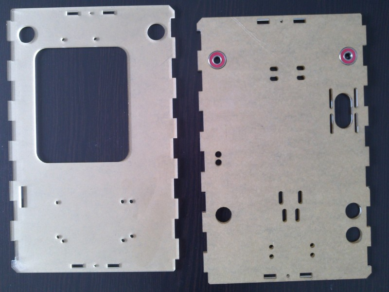
相同方式继续处理“左面板”
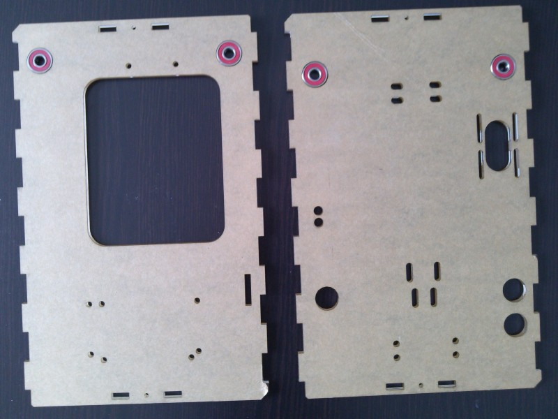
组装外壳
准备好嵌入轴承的外壳面板和需要的螺栓螺母及垫片
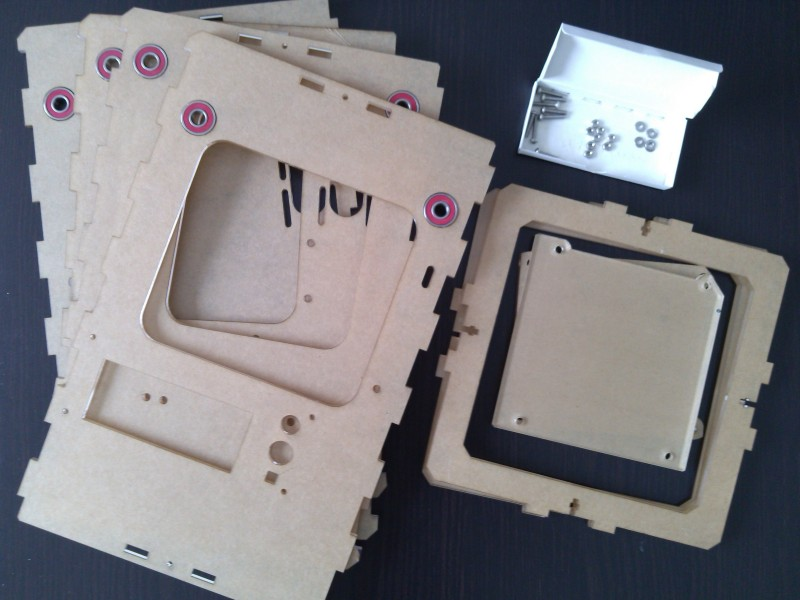
先组装“前面板”，“后面板” 和 “上盖板”，如图所示，侧躺着让“上盖板”连接前面板和后面板。
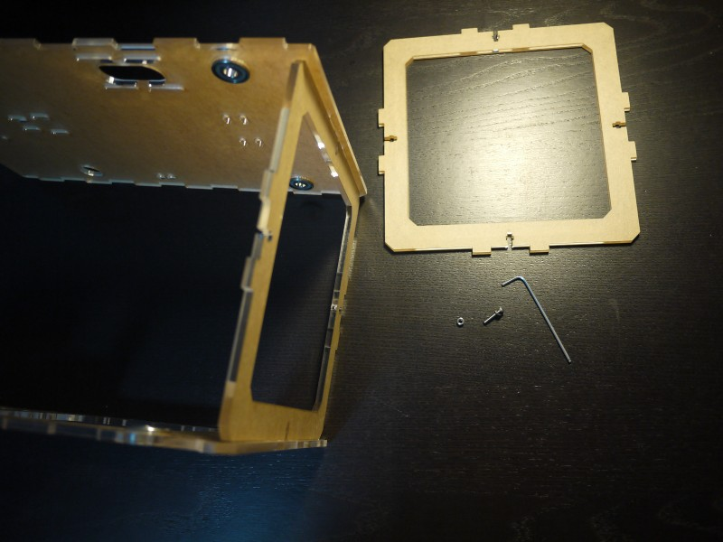
上螺栓的方法（连接前面板和上面板），在上盖板嵌入螺母后，用M3螺栓从前面板固定住。
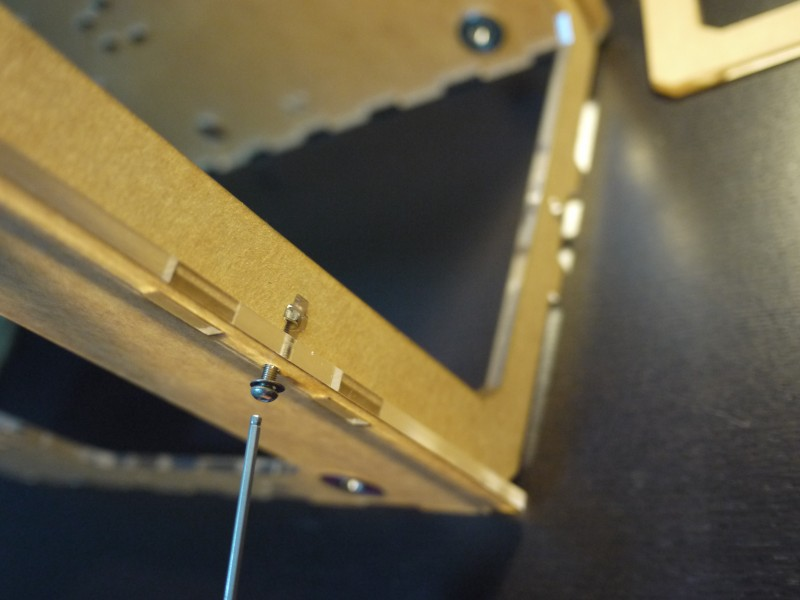
上另一边（连接后面板和上面板）
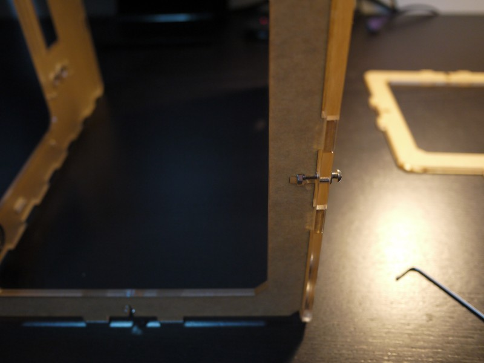
相同方法安装底部面板
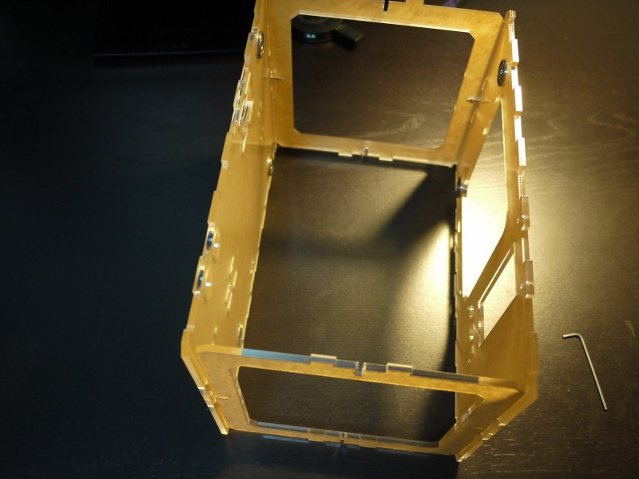
安装左面板
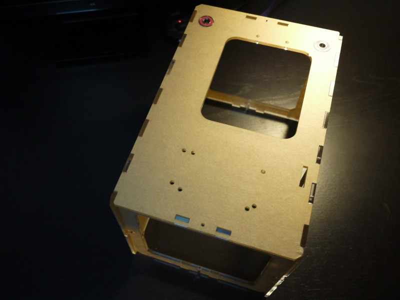
左面板安装好后的样子
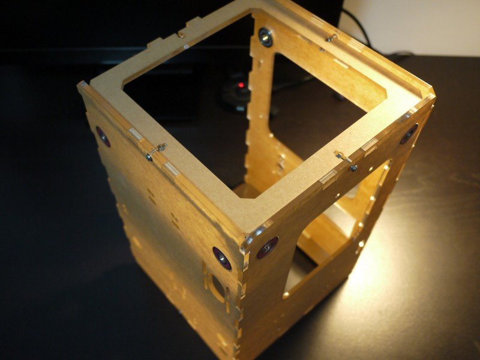
安装右面板后，整个外壳部分就完成了。
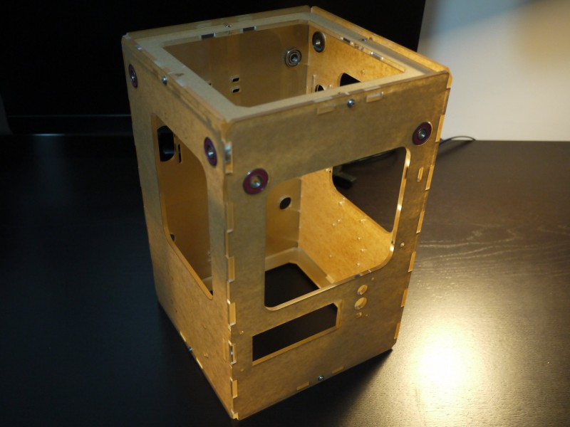